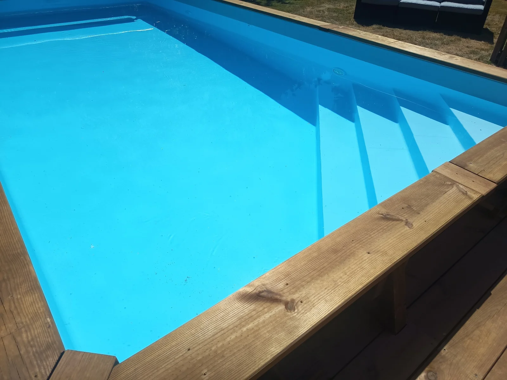
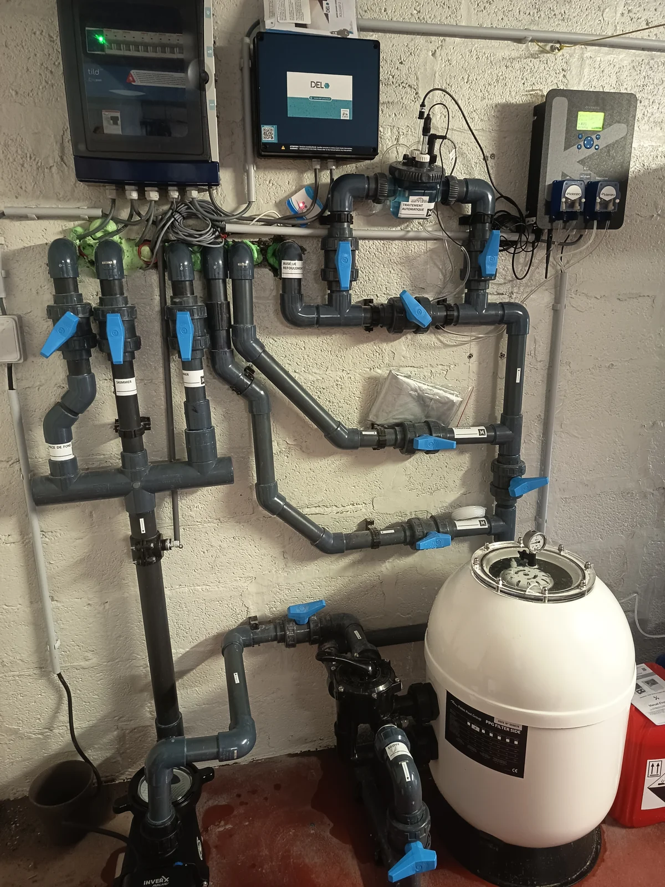

Le bassin et les finitions
- Piscine bois premium 6 × 3 m
- Escalier intégré d’angle
- Paroi intérieure lisse
- Double margelle bois de 15 cm à vis invisibles
- Liner de la sélection standard LC Création
LC 6.3 · Piscine bois premium 6 × 3 m
Volet PVC manuel et pompe à chaleur inclus. Un bassin équipé et posé par LC Création, du terrassement standard à la mise en service, avec la possibilité de prolonger le projet dans tout votre jardin.
25 900 € TVAC
Volet PVC manuel et pompe à chaleur inclus. Prix en conditions standards de chantier.

L’offre, en détail
Une base précise pour comparer les équipements, les finitions et le travail réellement compris.

Au plus près du bassin
L’escalier intégré facilite l’entrée dans l’eau. La double margelle et les vis invisibles soignent les bords du bassin. L’intérieur lisse prépare une finition régulière sous le liner.
Votre équipement
Filtre PPG Filter+, pompe à vitesse variable Invereco et coffret CLEA 2 : des équipements identifiés, installés et réglés dans le cadre de la mise en service.
Nous expliquons la filtration, le traitement de l’eau et les opérations utiles au quotidien. Le volet PVC manuel, la pompe à chaleur et les deux LED sont compris dans l’offre.
Voir les étapes de réalisation
Personnaliser votre projet
Des équipements tels que l’Orpheo X peuvent faciliter le suivi du traitement de l’eau, selon la configuration retenue.
Bois, grès cérame, circulations, plantations ou adaptation des niveaux : l’extérieur se dessine avec le bassin.
Après la première baignade
Il accompagne l’offre LC 6.3. Pour organiser le suivi dans la durée, le Pack Sérénité annuel est proposé séparément à 399 € par an.
Le périmètre du chantier
Le prix de 25 900 € TVAC s’applique en conditions standards de chantier. L’accès, les niveaux, la nature du terrain et les raccordements sont vérifiés lors de l’étude.
Les prestations et adaptations retenues sont détaillées dans votre devis.
LC Création · Grez-Doiceau et Brabant wallon
Indiquez votre commune, l’état du terrain et vos envies. Nous précisons ensemble l’implantation et les aménagements.